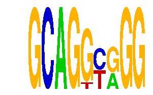

family_21 |
|---|
|  |
| Download PWM |
| Download instances (motifs) |
| Show motif distribution |
Query_ID | Query_Consensus | Subject_Name | Source_DB | Subject_ID | Length | Orientation | Offset | Divergence | Overlap | Subject_Consensus |
|---|---|---|---|---|---|---|---|---|---|---|
| family_21 | GCAGGCGGG | CTGCAGY | JASPAR | PF0101 | 7 | reverse-complement | -3 | 0.031 | 4 | CTGCAGC |
| family_21 | GCAGGCGGG | TGCGCANK | JASPAR | PF0022 | 8 | as given | -3 | 0.738 | 5 | TGCGCANG |
| family_21 | GCAGGCGGG | GLIS3 | HOCOMOCO | GLIS3_HUMAN.H10MO.D | 10 | as given | 4 | 0.742 | 5 | GYGGGGGGTM |
| family_21 | GCAGGCGGG | ZBTB4 | HOCOMOCO | ZBTB4_HUMAN.H10MO.D | 17 | as given | -8 | 0.753 | 9 | CCTAGATGGCAGGTGGG |
Sequence | Start_position (from start) | Start_position (from end) | Average conservation | Best conservation score | Instance_with_best_CS | Best_Z-score | Instance_with_best_ZS | Strand |
|---|---|---|---|---|---|---|---|---|
| chr14:104864768-104865768 | 70 | 79 | 0.00522222 | 0.015 | GCAGGYRGG | 15.038714 | GCAGGYRGG | 1 |
| chr6:127939598-127940598 | 459 | 468 | 0.924556 | 0.993 | GCAGGYRGG | 15.038714 | GCAGGYRGG | -1 |
| chr4:140977485-140978485 | 494 | 503 | 0.002 | 0.012 | GCAGKYGGG | 15.038714 | GCAGGYRGG | -1 |
| chr13:95576168-95577168 | 772 | 781 | 0.00977778 | 0.015 | GCAGGYRGG | 12.710033 | GCAGKYGGG | -1 |
| chr8:28373687-28374687 | 236 | 245 | 0.520444 | 0.806 | GCAGGYRGG | 15.038714 | GCAGGYRGG | 1 |
| chr6:51420374-51421374 | 314 | 323 | 0.931444 | 0.982 | GCAGKYGGG | 15.038714 | GCAGGYRGG | 1 |
| chr1:137733305-137734305 | 269 | 278 | 0.001 | 0.005 | GCAGGYRGG | 12.710033 | GCAGKYGGG | 1 |
| chr17:48571335-48572335 | 893 | 902 | 0.531889 | 1 | GCAGKYGGG | 15.038714 | GCAGGYRGG | 1 |
| chr11:5797717-5798717 | 1 | 10 | 0.0382222 | 0.148 | GCAGGYRGG | 15.038714 | GCAGGYRGG | 1 |
| chr18:61123056-61124056 | 116 | 125 | 0.0607778 | 0.082 | GCAGGYRGG | 12.710033 | GCAGKYGGG | 1 |
| chr6:124869568-124870568 | 146 | 155 | 0.999444 | 1 | GCAGKYGGG | 15.038714 | GCAGGYRGG | -1 |
| chr4:134842576-134843576 | 347 | 356 | 0.00522222 | 0.006 | GCAGGYRGG | 15.038714 | GCAGGYRGG | -1 |
| chr4:134722044-134723044 | 510 | 519 | 0.792333 | 1 | GCAGGYRGG | 12.710033 | GCAGKYGGG | -1 |
| chr17:84012832-84013832 | 607 | 616 | 0.008 | 0.012 | GCAGGYRGG | 15.038714 | GCAGGYRGG | 1 |
| chr11:114026936-114027936 | 544 | 553 | 0.00922222 | 0.011 | GCAGKYGGG | 12.710033 | GCAGKYGGG | 1 |
| chr11:114059629-114060629 | 273 | 282 | 0.232 | 0.64 | GCAGGYRGG | 15.038714 | GCAGGYRGG | 1 |
| chr15:36538708-36539708 | 771 | 780 | 0.00288889 | 0.007 | GCAGKYGGG | 12.710033 | GCAGKYGGG | 1 |
| chr11:120101153-120102153 | 44 | 53 | 0.000777778 | 0.002 | GCAGKYGGG | 15.038714 | GCAGGYRGG | -1 |
| chr11:5797717-5798717 | 312 | 321 | 0.00111111 | 0.003 | GCAGKYGGG | 12.710033 | GCAGKYGGG | 1 |
| chr19:43594664-43595664 | 492 | 501 | 0.062 | 0.279 | GCAGGYRGG | 15.038714 | GCAGGYRGG | -1 |
| chr4:128970573-128971573 | 273 | 282 | 0.0107778 | 0.051 | GCAGGYRGG | 15.038714 | GCAGGYRGG | -1 |
| chr4:128970573-128971573 | 231 | 240 | 0.00333333 | 0.022 | GCAGKYGGG | 12.710033 | GCAGKYGGG | -1 |
| chr6:86437151-86438151 | 594 | 603 | 0.419444 | 0.44 | GCAGGYRGG | 12.710033 | GCAGKYGGG | 1 |